17 Goochland County
This chapter is a summary of the major changes to the Goochland County’s population and housing market in the past five years.
17.1 Takeaways
- After brief declined in the early 2010s, Goochland County’s population has been growing steadily since 2012.
- The majority of population change in the county has been due to domestic migration. Between 2020 and 2021, the county saw 738 new residents from other parts of the region, state, or nation.
- Homeowners have seen increasing median incomes in the county, while renter median renter income gains disappeared by 2020.
- Despite the COVID-19 pandemic demand, median home price in Goochland County has remained relatively flat, but still among the highest in the region — averaging in the $500,00s.
- New rental properties along the eastern border of the county have driven average asking rents well into the $2,000s.
- Cost burden has been in decline for both homeowner and renter households, but nearly one in four renter households in the county remain cost-burdened as of 2018.
17.2 Demographic and socioeconomic changes
17.2.1 Population changes
Despite an initial decline in the early 2010s, Goochland County’s population has been on a steady increase since 2012. From 2012 to 2020, the population has increased by 16 percent to reach 24,727 residents. Much of this growth can be tied to development in the eastern part of the county, where development activity Goochland-Henrico border has been increasing.
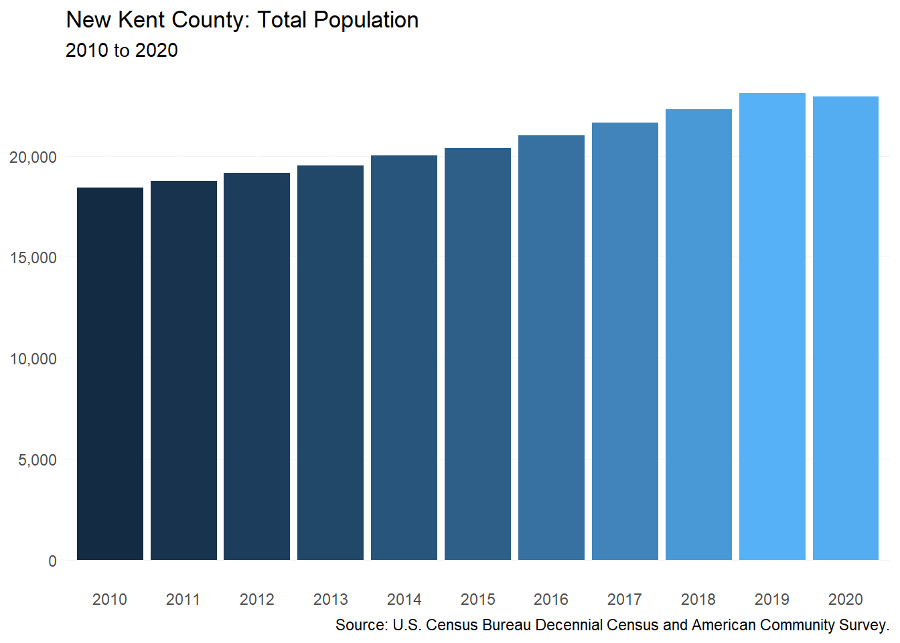
The growth in population is due in large part to domestic migration. Between 2020 and 2021, 738 new residents arrived in the county from somewhere else in the region, state, or nation.
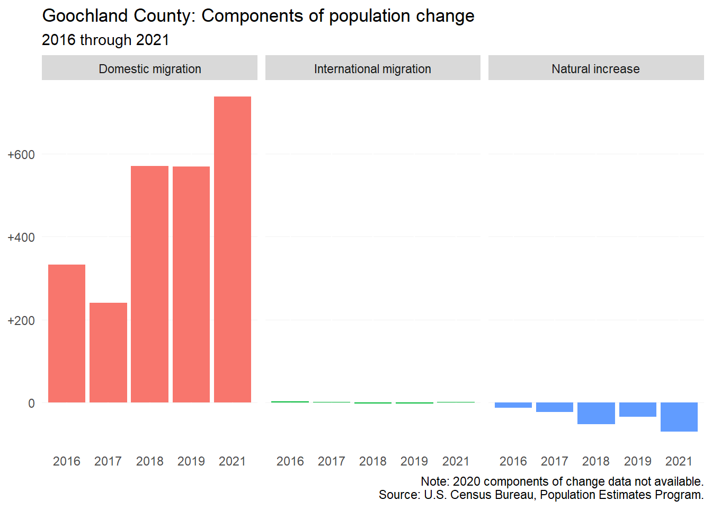
17.2.2 Household characteristics
All types of households are seeing an increase in the county — especially homeowner households. Renter households have also seen a net increase in the county between 2016 and 2020, but that growth has mainly been among nonfamily renter households (+119), which typically refers to households that live alone or with a roommate.
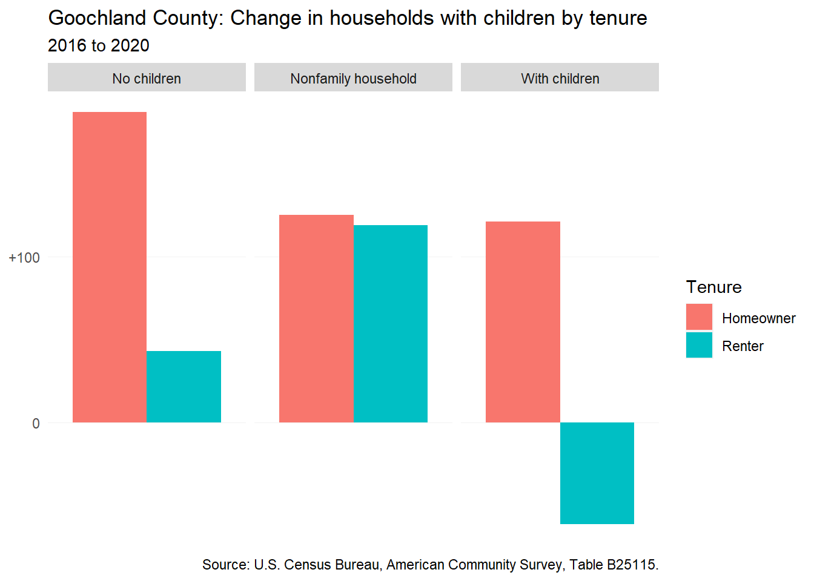
The senior population has been growing in the county (+996). Although much of that growth has occurred among seniors living with family, 27 percent of the increase was among seniors living alone.
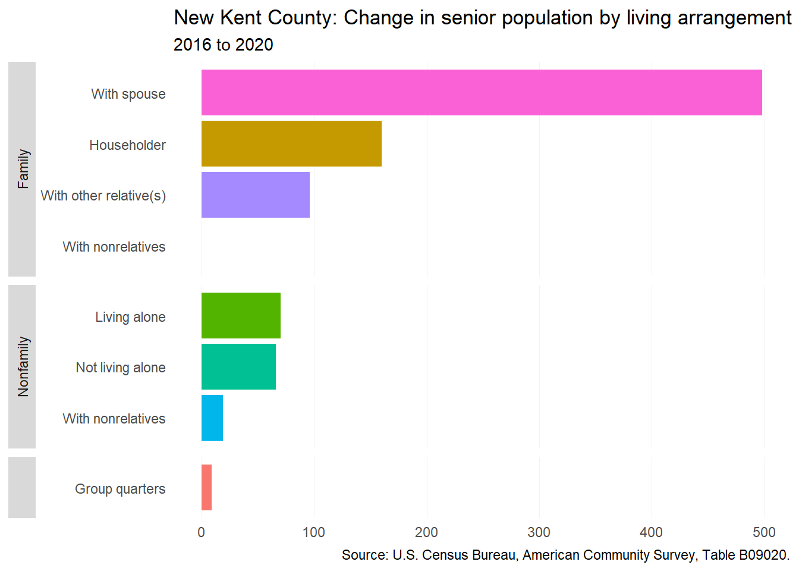
17.2.3 Income and wages
Median homeowner household income has been growing in Goochland County. From 2016 to 2020, the typical homeowner household income increased by 14 percent. Renter households saw some initial increases in median household income from 2016 to 2019, but between 2019 and 2020, median renter household income actually decreased by 18 percent (-$10,291).
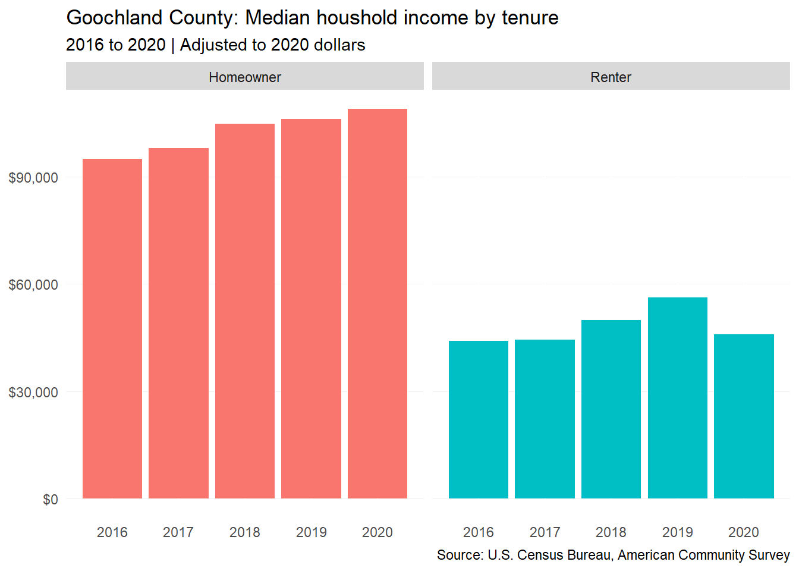
17.2.4 Persons with disabilities
Individuals with independent living difficulties have generally been decreasing in the county — particularly among individuals under 75 years old. But there has been a slight increase in individuals 75 years old and older with independent living difficulties. The net decrease in individuals with independent living difficulties could be a signal of limited accommodations and resources for adults in the county and subsequent departure of those individuals from the county.
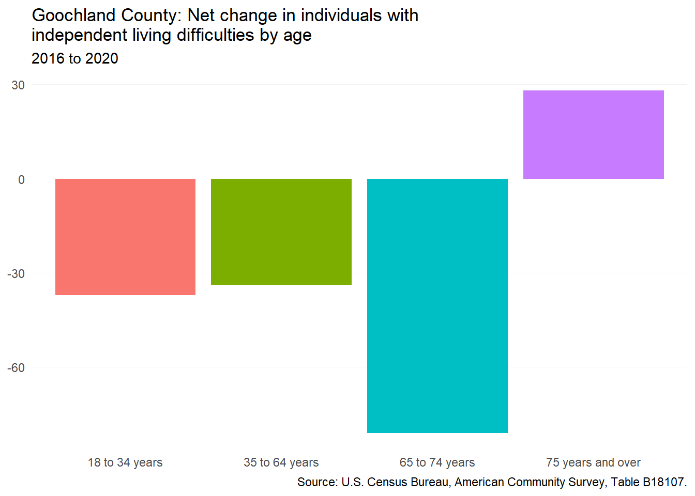
17.3 Housing supply and market changes
17.3.1 Homeownership
As with all other localities in the region, home prices in the county have followed seasonal trends. In January 2017, the median home price in the county was $473,901 and by July 2022 reached $534,441 — a 13 percent increase. Goochland County saw some spikes in median home price during the pandemic, but clearly those spikes did not exceed previous trends in the county.
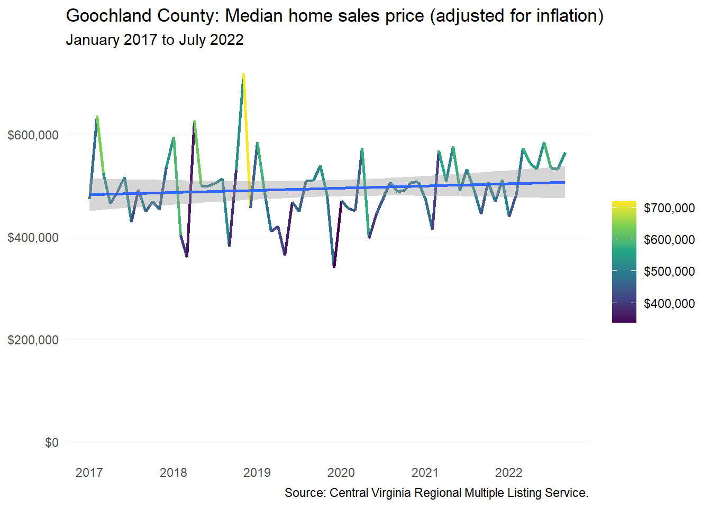
17.3.2 Rental
The rental market in Goochland County has largely grown in the past five years. The development of West Creek Business Park and with it the headquarters for major employers such as CarMax and Capital One has led to increasing demand for housing at the eastern edge of the county. The market has responded with luxury multifamily developments such as The Retreat at West Creek and Tuckahoe Pines and there are at least 1,700 more units on the way.
The increasing rental demand has been apparent in high average asking rent in Goochland County. As of 2022 Q3, average asking rent in the county was $2,208. Adjusting for inflation shows despite what appears to be a 24 percent increase in rent from 2016 Q1 to 2022 Q3, the value of the dollar has changed in such a way that rent then and now has changed very little. Nonetheless, an average asking rent of $2,208 remains a steep price for low- and even moderate-income households.
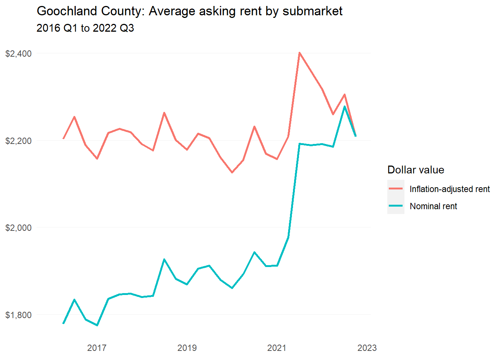
17.3.3 Housing assistance
As of early 2022, there were no federally-assisted rental housing properties located in Goochland County.
17.3.4 Naturally-occurring affordable housing
CoStar does not list any one- or two-star rental properties in Goochland County, therefore the number of NOAH properties in the county is largely unknown. However, the U.S. Census Bureau may provide clues as to where NOAH may be generally located in the county by determining what type of structures renters reside in.
As of 2020, the majority of renters reside in single-family homes (71 percent). The share of renters residing single-family homes has decreased as the number of multifamily properties has increased, but there has also been a raw decrease in single-family renters (from 935 in 2016 to 838 in 2020). The large share of single-family rentals could potentially be a large source of NOAH in the county.
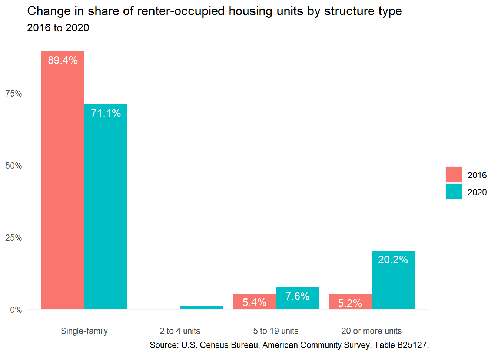
17.4 Gap analysis
17.4.1 Affordability of current housing stock
When comparing renter income to the average asking rent in a year, Goochland County has seen a persistent gap between what is on the market and what is affordable to the typical renter. The gap between median renter household income and average asking rent in 2016 was $752. By 2020, that gap had increased by $10 — continuing to leave the typical renter hundreds of dollars short of affording the typical rent.
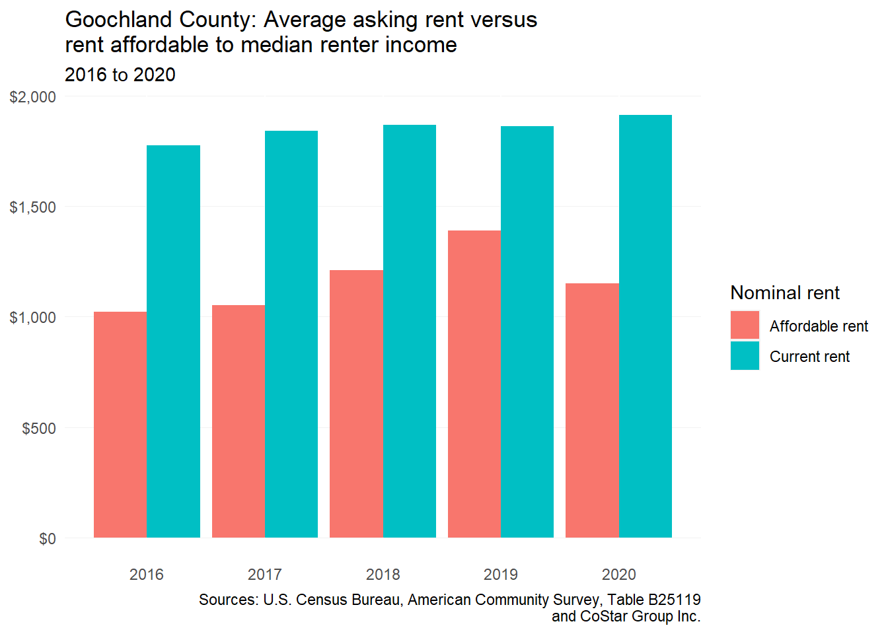
. For renters to afford homeownership, the income needed to afford the the median priced home is a steep economic climb. In 2016, a household needed to make roughly $87,483 to afford the median sales price, but a renter’s median household income was only $40,915. By 2020, the gap had only narrowed slightly to $39,448.
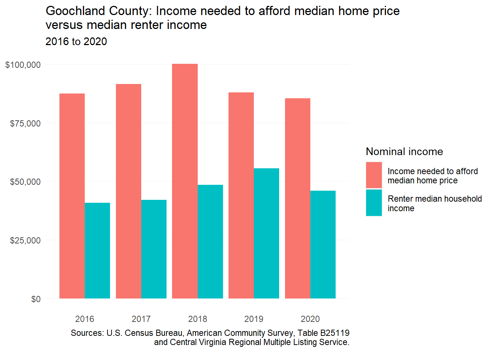
The latest data from HUD shows that there was a shortage of 160 rental homes affordable to households making less than 80 percent AMI in 2018. This was a deficit decrease from 2015 when the shortage was 274. For Goochland County, the shortage among renters below 30 percent AMI has been declining slightly. But the major shortage exists among renters between 31 and 50 percent AMI.
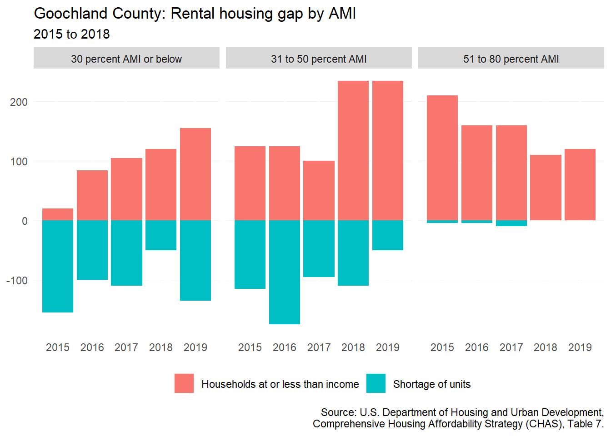
17.4.2 Impact of housing costs
Cost burden in the county has declined in the county for both homeowners and renters. In 2015, 22 percent of homeowners were cost-burdened, but by 2019 that estimate had declined to 17 percent. Renters also saw declines — from roughly 32 percent to 27 percent during this same time period.
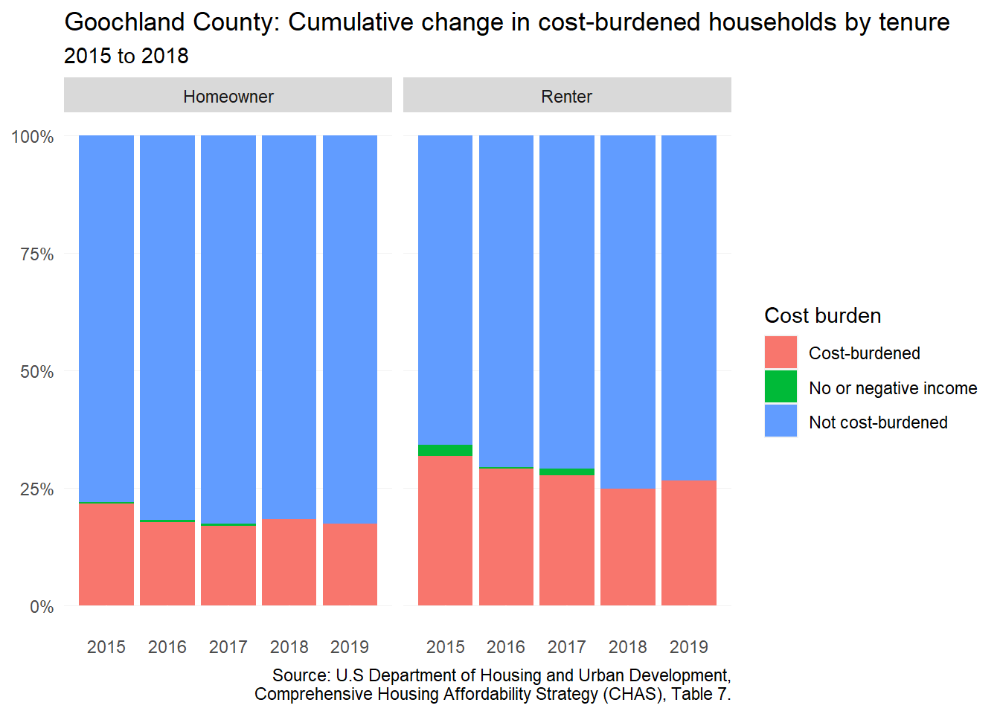
McKinney-Vento Act data shows small changes in the number of enrolled students experiencing homelessness. Although there was a decline from the 2016-2017 school year, the number of students experiencing homelessness increased in the most recent year of 2019-2020. In rural communities like Goochland County, homelessness can often be invisible and difficult to assess. In some cases, substandard housing is a just as critical issue for those extremely low-income individuals and households.
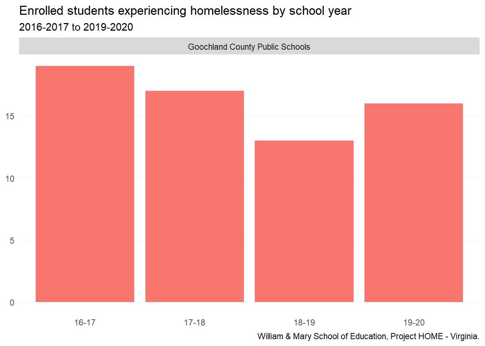